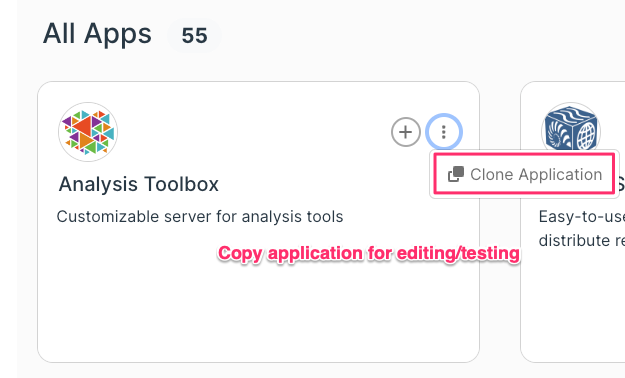
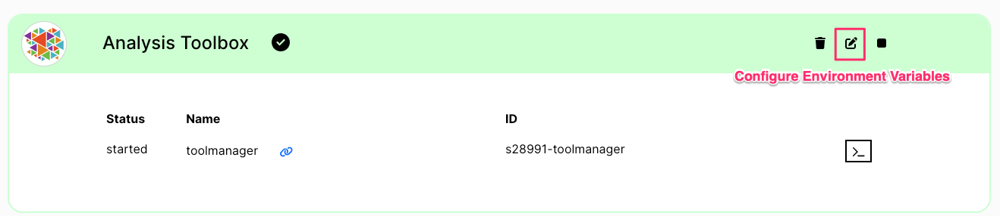

Contributor Guide
Contributors and Developers in the system have access to some special functionality.
To access the following features, ask your administrator to add you to the workbench-developers group in Keycloak.
View: All Apps
Contributors have the ability to “Clone” a spec from the All Apps view
This will create a copy of the app on the “My Catalog” so that it can be edited or extended
{kind=link}
View: My Apps
Contributors have the ability to “Edit” envvars for an App instance in the “My Apps” view
This allows you to set/override custom Environment Variables before launching the app
{kind=link}
View: My Catalog
Most importantly, only developers have access to a custom “My Catalog” view.
This allows contributors to see their created/cloned applications and edit the spec directly.
After editing the spec, the App will be displayed in your All Apps view, but will not yet be shown to other users.
This allows you to create, modify, and test custom applications
- List all your Catalog applications
Export JSON spec from Catalog
Clone App to Catalog
Edit App in Catalog
Delete App from Catalog
{kind=link}
Import JSON spec to Catalog
{kind=link}
Create / Edit App in Catalog
Key (required) / Label (optional)
Display: stack / service / none
Access : external / internal / none
- Docker Image Metadata
Single repo / image name
List of offered tags
Command / Args
Logo / info URLs
Dependencies
- Environment Variables
Defaults / Overrides
Passwords
- Ports
Protocol - TCP / UDP / HTTP(S)
Port Number
Path (HTTP only)
- Volumes
From Path (Host / PVC)
To Path (inside Container)
{kind=link}